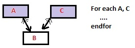

Indicates the Transaction name or Transaction.Level name to be used as the base table for certain navigation.
In other words, declares your navigation intention.
Although optional, its use is recommended to improve the expressive capacity of the command to which it is associated (For Each command, Data Provider Group statement). In addition, time for the specification is improved, because it isn't needed to do the calculation of the command/statement or control Base Table.
It may be a list of Transaction levels. In that case, a kind of 'product' between the tables is done, solving queries that imply navigation over different tables that are difficult to express in another way, or that cannot be solved in a single SQL sentence.
<BaseTrnList> ::= <Trn1> {, <Trni>}...
where:
<Trni> is a Transaction Level name.
If one Base Transaction is declared, the Table associated with this Transaction level is considered as the Base Table of the context that clause is linked (e.g. the For Each command), and all attributes belonging to that context (e.g. for each body, conditions, orders, etc.) must be in its Extended Table. Otherwise, the navigation report will throw a warning 'Attribute is not instantiated' for all attributes not belonging to the extended table.
If more than one Base Transaction is declared and the Tables are directly related (or you define an explicit filter by equality between two different attributes), then a join is made among the tables associated with these Transaction levels. Otherwise, a cartesian product is done, or if no relation can be found, then a specification error will occur (spc0027).
The attributes of the context this clause is linked to, have to be in the extended table of any of these tables.
Thus, in the following example: 
As long as there is a relationship between A and C (by means of B), the For Each command will consider:
for each A record, all C related by means of the corresponding B (that is, a join will be made)
Notes:
To see further examples: Multiple Base Transactions in a For Each command.
Considering the following Transactions:
User //Transaction 1st. level name
{
UserId*
UserName
UserType
Role //Transaction 2nd. level name
{
RoleId*
}
}
Role //Transaction 1st. level name
{
RoleId*
RoleName
}
If you want to display all the users by means of a Procedure, with a For Each command mentioning a Base Transaction the syntax is:
For each User print userInfo //printblock with UserId, UserName attributes Endfor
As the 'User' Transaction level is specified, thus, the For each base table will be associated with that level: USER. So, the attributes inside the body of the For each (as well as orders, conditions, etc.) must belong to the extended table of USER (and they do!).
An equivalent example would be writing the following Data Provider group definition:
UserCollection from User
{
UserItem
{
Id = UserId
Name = UserName
}
}
Note that to indicate the Base Transaction in a Data Provider it is necessary to use the from clause into the Data Provider Group statement.
The Data Provider will return a collection SDT as output, loaded through scanning the USER table.
Suppose you want to display, for each role, the related users. Then, the code you have to define is:
for each Role
print roleInfo //printblock with RoleId, RoleName
for each User.Role
print userInfo //printblock with UserId, UserName
endfor
endfor
Note that the nested For each base table will be associated with the second level of the 'User' Transaction (User.Role). That's why the users displayed for each role are those that correspond to the role navigated (a join is made).
Considering a Program Transaction, which stores the information of each program of the system, and that is not related to Users and Roles Transactions at all, suppose you need to list the Cartesian Product of the User and Program tables filtering by the administrator user (due to the administrator has access to all programs).
The code would be as follows:
For each User, Program
where UserType = 'Administrator'
print crossInfo //printblock with UserName, ProgramName attributes
endfor
Note there is no relationship between the USER table and the PROGRAM table through any table. Thus, for each user of the 'Administrator' type, all program names will be displayed next to the user name.
5.1) Consider a multi-company system where you know the Products sold by each Company and distributed by each Provider. The Transaction structures would be as follows:
Product
{
ProductId*
ProductName
}
Company
{
CompanyId*
CompanyName
Product
{
ProductId*
ProductName
}
}
Provider
{
ProviderId*
ProviderName
Product
{
ProductId
ProductName
}
}
In that scenario, suppose you need to list the combination of Companies and Providers which sell the same given Product:
Parm(&ProductId);
For each Company.Product, Provider.Product
where ProductId = &ProductId
print crossInfo //printblock with CompanyName, ProviderName attributes
endfor
Note the tables COMPANYPRODUCT and PROVIDERPRODUCT are directly related by means of PRODUCT table. Thus, for each record in Company.Product with ProductId = &ProductId, all the related records on PROVIDERPRODUCT will be considered (all records matching: PROVIDERPRODUCT. ProductId = COMPANYPRODUCT.ProductId).
5.2) Consider the following Transaction structures:
Transaction1
{
A*
B
C
}
Transaction2
{
D*
E
}
In that scenario, where there is no relationship between B and D (their names are different and they are not subtypes), if you define a For each like the following:
For each Transaction1 ,Transaction2
where B = D
print printblock1 //printblock with C and E attributes
endfor
where Transaction1 and Transaction2 are declared as Base Transactions and an explicit filter by equality between B and D attributes is defined, then a join is made among the tables associated with Transaction1 and Transaction2.
In this particular example, the SQL sentence (for SQL Server) is generated as shown below:
SELECT T2.[D], T1.[B], T1.[C], T2.[E], T1.[A] FROM [Transaction1] T1, [Transaction2] T2 WHERE T1.[B] = T2.[D] ORDER BY T1.[A].